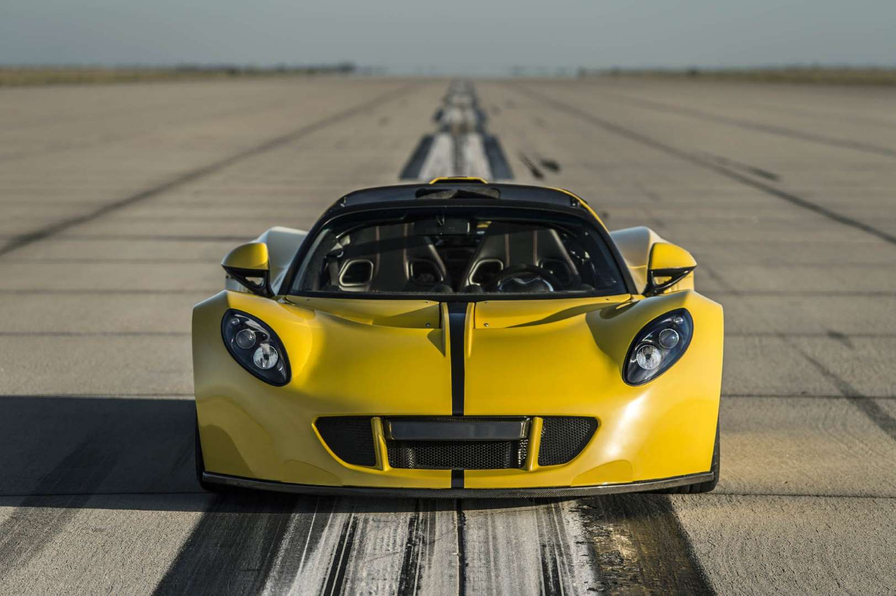
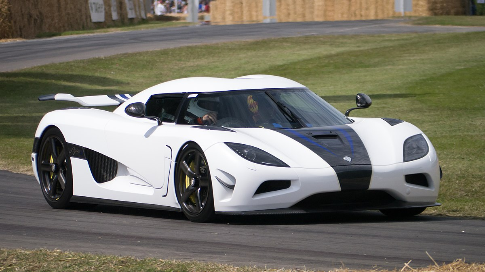
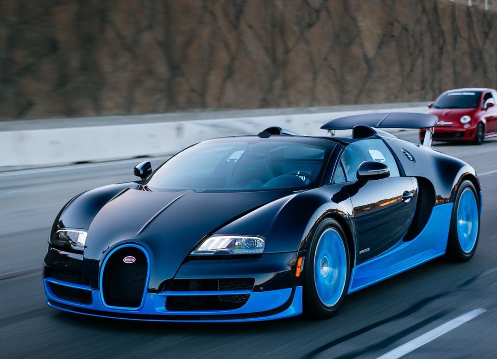
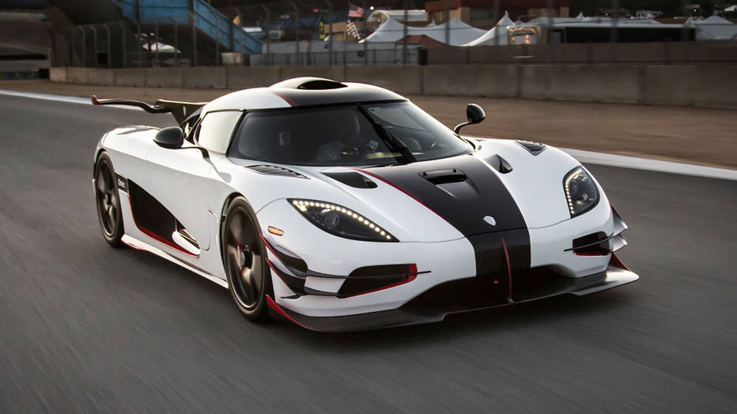

Ele é um carro de produção inicial de 2013 e em testes feitos pela marca em março de 2016, esse
carro atingiu a
velocidade de 427,4 Km/h, se tornando o conversível mais rápido do mundo. Ele chega de 0 a 100
km/h em 2,4 segundos.
Motor e cilindros: V8; Velocidade Máxima: 427,4 Km/h; 0 a 100 km/h: 2,5 segundos. Cavalos de
potência: 1451; Máx.
torque: 1566 Nm a 4400 rpm.
4 - Koenigsegg Agera

É uma série de modelos que começou a ser produzido em 2011 e o último modelo o Agera RS tem uma
velocidade máxima
estimada segundo a marca de 430 km/h. O Agera RS alcança a velocidade de 0 a 100 km/h em 2,8
segundos. Motor e
cilindros: V8; Velocidade Máxima: 430 Km/h; 0 a 100 km/h: 2,8 segundos; Cavalos de potência:
1160; Máx. torque: 1280 Nm
a 4100 rpm.
3 - Bugatti Veyron Super Sport

É um carro que foi revelado em 2005 e está no terceiro lugar dos carros mais rápidos do mundo
pela marca de 431,07 Km/h
e em primeiro lugar pelo livro dos Recordes. Sua produção é limitada a 30 unidades e a edição
recorde mundial que é
caracterizado por detalhes alaranjados foi limitado a 5 unidades. O Veyron já foi eleito o
carro da década(2001 a
2009). Motor e cilindros: W16; Velocidade Máxima: 431,07 Km/h; 0 a 100 km/h: 2,5 segundos;
Cavalos de potência: 1200;
Máx. torque: 1 500 Nm a 3 000-5 000 rpm;
2 - Koenigsegg One

O koenigsegg One foi apresentado em 2014 e a velocidade máxima que ele pode alcançar segundo a
marca é de 435 Km/h, embora não tenha
sido testada. Esse carro chega de 0 a 100 Km/h em 2,8 segundos. Motor e cilindros: V8;
Velocidade Máxima: 435 Km/h; 0 a
100 km/h: 2,8 segundos; Cavalos de potência: 1360; Máx. torque: 1371 Nm a 6000 rpm.
1 - Hennessey Venom GT
Foi um carro revelado em março de 2010 e alcançou o primeiro lugar dos carros mais rápidos do
mundo nessa lista em um
teste feito pela marca em fevereiro de 2014, alcançando 435,31 Km/h, embora essa marca não seja
reconhecida pelo Livro
dos Recordes que exige trajetos a favor e contra o vento. Em janeiro de 2013 o Venon GT atingiu
o recorde mundial de
melhor aceleração de 0 a 300 Km/h em 13,63 segundos. Motor e cilindros: V8; Velocidade Máxima:
435,31 Km/h; 0 a 100
km/h: 2,7 segundos; Cavalos de potência: 1244; Máx. torque: 1566 Nm a 4400 rpm.